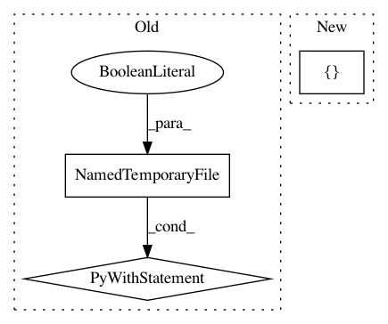

cea292769af4ac688649573a11b20f4d69024e3d,tests/unit_test/processor_units/test_processor_units.py,,test_bert_tokenizer_unit,#,145
Before Change
"[UNK]", "[CLS]", "[SEP]", "want", "////want", "////ed", "wa", "un", "runn",
"////ing", ","
]
with tempfile.NamedTemporaryFile(delete=False) as vocab_writer:
vocab_writer.write("".join(
[x + "\n" for x in vocab_tokens]).encode("utf-8"))
vocab_file = vocab_writer.name
tokenizer_unit = units.BertTokenize(vocab_file, do_lower_case=True)
os.unlink(vocab_file)
After Change
def test_bert_tokenizer_unit():
vocab_tokens = [
"[PAD]", "further", "////more", ",", "under", "the", "micro", "////scope", "neither",
"entity", "contains", "glands", ".", "此", "外", "在", "显", "微", "镜", "下"
]
raw_text = "furthermore, \r under the microscope \t neither entity \n contains sebaceous glands. 此外, 在显微镜下"
golden_tokens = ["further", "////more", ",", "under", "the", "micro", "////scope", "neither", "entity", "contains",
"[UNK]", "glands", ".", "此", "外", ",", "在", "显", "微", "镜", "下"]
In pattern: SUPERPATTERN
Frequency: 3
Non-data size: 3
Instances
Project Name: NTMC-Community/MatchZoo
Commit Name: cea292769af4ac688649573a11b20f4d69024e3d
Time: 2019-05-15
Author: 469413628@qq.com
File Name: tests/unit_test/processor_units/test_processor_units.py
Class Name:
Method Name: test_bert_tokenizer_unit
Project Name: tensorflow/minigo
Commit Name: c42da55607fa672a1f0acf3dbd9fb8e8fbdc57a6
Time: 2019-11-20
Author: tmadams@google.com
File Name: dual_net.py
Class Name:
Method Name: freeze_graph_tpu
Project Name: ray-project/ray
Commit Name: 898e47242527e402f4d014fd084c31843d64d1b8
Time: 2020-06-27
Author: mehrdadn@users.noreply.github.com
File Name: python/ray/test_utils.py
Class Name:
Method Name: run_string_as_driver_nonblocking